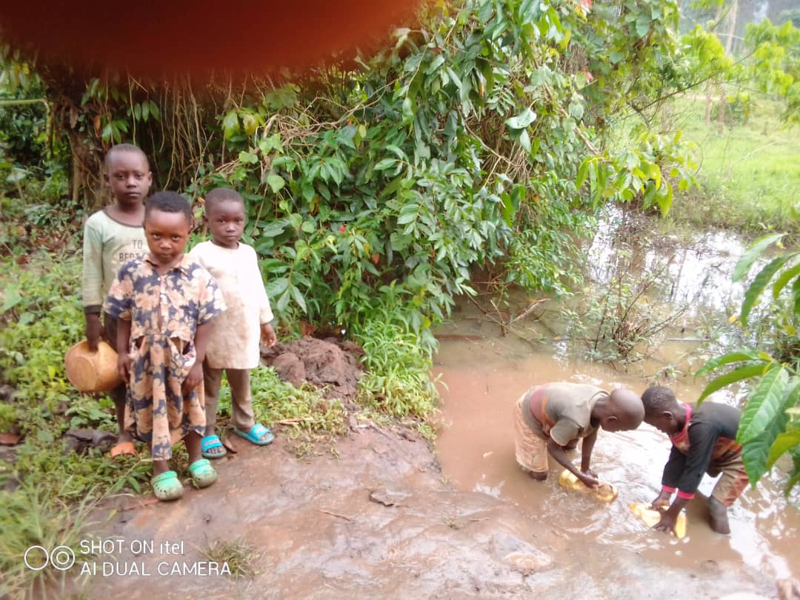

Pr Alex kakooza children foundation is an organization which cares and feed the orphans on behalf of the absence of their parents and it is authorized by the chairperson of the place where it is located.It is located in sekanyonyi town in mityana district and it is surppoted by both Alex kakooza and the single mother who helps in cooking food in the absence of kakooza Alex who is the founder of this organization.it helps to school the young souls of tomorrow and the ophans plus those children who were adopted by their mother and father.we keep and make sure that the children grow up in a civirized way in that they can become leaders of tomorrow in if we are not around. And by the grace of God we committed to serve the nation since we also came from poor family and will always remember to embed on God the creater because he is the one to bless all our works.may God bless all of those who are willing to support and donate to our foundation inorder to uprise it and making it hopeful.we touch ourselves on the Bible because it is the source of hoeful and encouraging words which hardness the broken up hearts and God because He said that he will bless